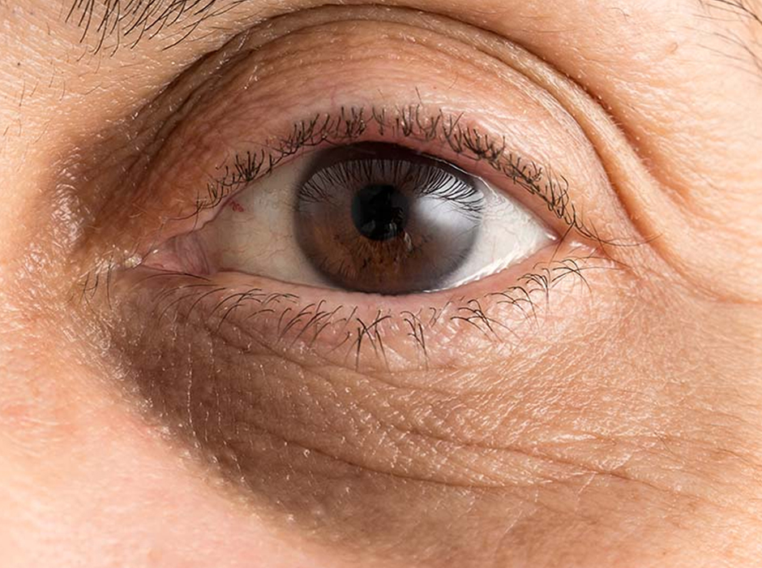
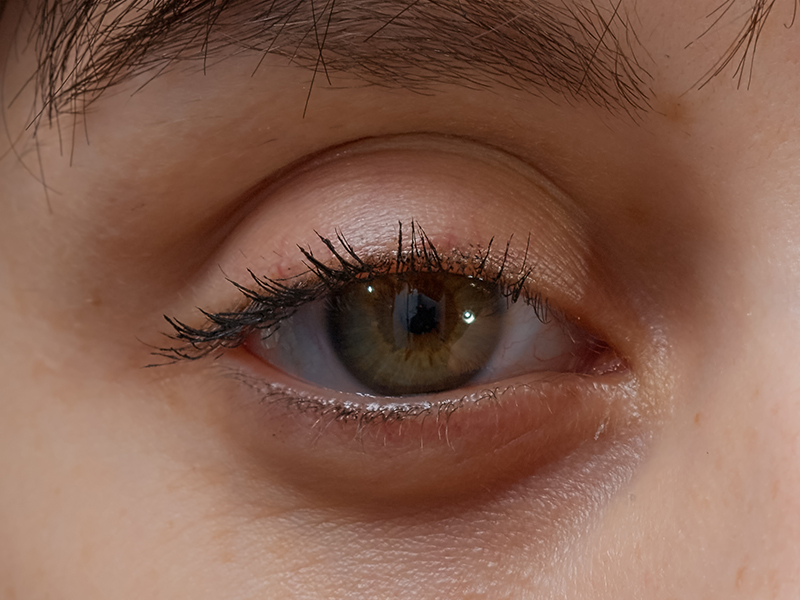
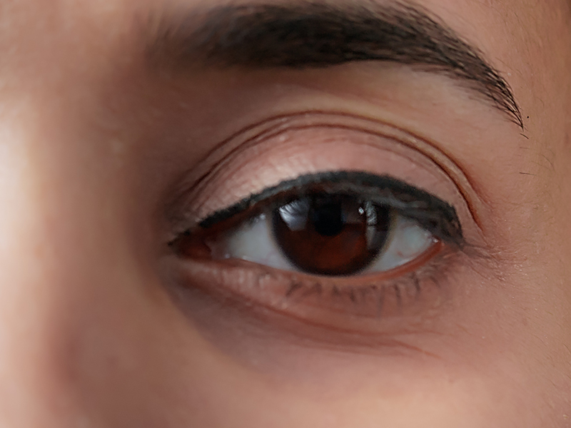

Book an Appointment
To arrange a consultation for dark circles treatment, call us on 020 7467 3720 or use our contact form. Our friendly team will be happy to assist you.


Dark circles under the eyes are a common concern that can make you look tired, stressed, or older than you feel — even when you’re well-rested. At the London Dermatology Centre, we offer comprehensive assessment and treatment for dark circles, addressing both their appearance and underlying causes.
Our dermatologists understand that under-eye discolouration is not a “one size fits all” issue. By combining medical expertise with the latest treatment techniques, we can create a personalised plan to brighten the under-eye area, restore a fresher appearance, and improve skin health.

Many people try to treat dark circles on their own with over-the-counter creams, home remedies, or lifestyle changes — but results are often disappointing because the real cause hasn’t been identified. A dermatologist can pinpoint whether your dark circles are caused by pigmentation, volume loss, thin skin, vascular changes, or a combination of factors.
At the London Dermatology Centre, we don’t just mask the problem — we aim to address it at its root. This means your treatment plan will be tailored to your exact needs, often combining medical treatments with long-term skin health advice. Seeing a dermatologist also ensures any procedure is carried out safely, particularly in such a delicate and sensitive area of the face.

Although SCC can often be cured when treated early, it may grow aggressively and, in some cases, spread to nearby lymph nodes or organs. Delaying treatment can lead to larger tumours, more complex surgery, or potential complications.
Prompt treatment removes the cancer, preserves surrounding healthy tissue, and reduces the risk of recurrence or spread. Early intervention also improves cosmetic outcomes—particularly for lesions on visible areas like the face or hands.
Dark circles can occur for many reasons, and often several factors contribute at once:
Some people are naturally predisposed to having darker pigmentation or hollowness under the eyes.
As skin becomes thinner with age, blood vessels beneath the surface can become more visible.
Increased melanin in the skin can cause a brown or grey discolouration.
Reduction in the fat pads beneath the eyes can create shadows or a “tear trough” hollow.
Fatigue, dehydration, smoking, or poor diet can all worsen the appearance of dark circles.
These can cause congestion and swelling, leading to a bluish or purplish hue under the eyes.
During your consultation, we will identify the specific causes in your case, as this directly influences which treatment will work best for you.

Because dark circles can result from different causes, the London Dermatology Centre offers a range of tailored treatments, which may be used individually or in combination:
Prescription creams containing ingredients such as retinoids, vitamin C, or hydroquinone can help reduce pigmentation and improve skin texture.
Hyaluronic acid-based fillers can restore lost volume in the tear trough, reducing shadows and smoothing the under-eye area.
Target pigmentation, stimulate collagen, and improve overall skin tone for a brighter appearance.
Stimulate skin regeneration, boost collagen, and improve skin thickness.
Gentle peels formulated for the delicate eye area can reduce pigmentation and improve texture.
Recommendations to help maintain results, including sun protection, hydration, and allergen avoidance if relevant.
Your dermatologist will explain the pros and cons of each option and design a treatment plan suited to your needs, skin type, and goals.

While not all cases of dark circles can be completely prevented, there are steps you can take to reduce their severity and maintain results after treatment. These include:

Our dermatologists can provide you with a personalised prevention plan to help prolong the benefits of any treatment you receive.

At your initial consultation, your dermatologist will take a detailed history, examine your skin, and discuss any symptoms or concerns. You may be asked about your medical history, lifestyle, and skincare routine, as all of these can affect the under-eye area.
We may use specialised lighting or imaging to assess pigmentation depth and vascular changes. Based on the findings, we will recommend the most effective treatment strategy, whether that involves medical-grade skincare, injectable treatments, laser therapy, or a combination approach.

After treatment, we will provide you with clear aftercare instructions tailored to the specific procedure you have had. Common recommendations may include:
While some treatments give instant results, others work gradually over weeks or months. Maintenance sessions may be needed to sustain improvements, particularly for age-related changes or ongoing pigmentation concerns.
Not always. Depending on the cause, many cases can be significantly improved or even resolved with the right treatment plan.
Over-the-counter creams may help mildly, but persistent dark circles often need targeted medical treatments for noticeable results.
Yes, when carried out by an experienced dermatologist. We only recommend treatments that are proven safe and effective for the delicate eye area.
It depends on the treatment. Fillers can give immediate results, while laser, PRP, or skincare programmes may take several weeks to show full benefits.
Yes, especially if the underlying cause remains, such as ongoing allergies, ageing, or lifestyle factors. Maintenance treatments may help keep them under control.
Most treatments have little to no downtime. Some, like fillers, may cause mild swelling or bruising that settles in a few days.
The best treatment depends on the cause of your dark circles. That’s why a thorough dermatology consultation is essential.
Most patients describe it as a mild tingling or warming sensation. A numbing cream can be applied to make the procedure more comfortable.
Usually, yes, but it depends on the procedure. Your dermatologist will advise you on when makeup can be safely applied.
You can call us on 020 7467 3720 or use our contact form to arrange an appointment with one of our dermatologists.
The London Dermatology Centre is based at 69 Wimpole Street, London, W1G 8AS, in the heart of the Harley Street medical district. We are within walking distance of Oxford Circus, Bond Street, and Regent’s Park Underground stations.
Our modern, discreet clinic provides a comfortable setting for consultations and treatments, with easy access for patients travelling from across London and beyond.
Monday - Friday: 9.00 AM - 5.30 PM
Saturday & Sunday: Closed
69 Wimpole Street,
London W1G 8AS.
To arrange a consultation for dark circles treatment, call us on 020 7467 3720 or use our contact form. Our friendly team will be happy to assist you.